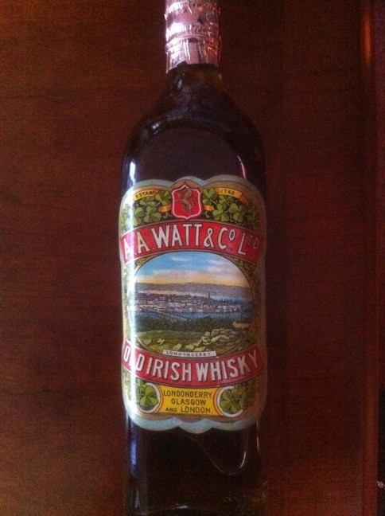

[img]IMG_0644.jpg/img]Despite the label saying Irish Whisky with no E I have a sealed bottle for pre 1920 when the Londonderry distillery of A A Watt fell silent.
Mr Watt gave a bottle to my Grandfather, they lived in Ramelton Donegal.
It has lain in tissue in the dark ever since.
Most vibrant label and no evaporation. Mint.
I am trying to reduce my collection now.
Up for auction or a very good bid.
I can email pictures if anyone wishes.
Can be hand delivered to Dublin 28th April.
D
NOTE: This forum is no longer active. This is an archive copy of the forum as it was on 10 March 2018.
A A WATT Whiskey
6 posts
• Page 1 of 1
A A WATT Whiskey
 by donaldosaurus » Thu Apr 12, 2012 6:38 am
by donaldosaurus » Thu Apr 12, 2012 6:38 am
- donaldosaurus
- New Spirit
- Posts: 3
- Joined: Thu Apr 12, 2012 6:26 am
Re: A A WATT Whiskey
 by donaldosaurus » Thu Apr 12, 2012 11:52 am
by donaldosaurus » Thu Apr 12, 2012 11:52 am
Reduced size pic attached
- Attachments
-
- 
- IMG_0644c1.jpg (77.22 KiB) Viewed 1025 times
- donaldosaurus
- New Spirit
- Posts: 3
- Joined: Thu Apr 12, 2012 6:26 am
Re: A A WATT Whiskey
 by IrishWhiskeyChaser » Thu Apr 12, 2012 12:06 pm
by IrishWhiskeyChaser » Thu Apr 12, 2012 12:06 pm
Hi Donald, thanks for sharing ... an exciting find indeed ...any markings on the foil capsule?
Sláinte Adrian
- IrishWhiskeyChaser
- Site Admin
- Posts: 2910
- Joined: Tue Mar 17, 2009 1:37 pm
- Location: A Dark Dunnage somewhere in Galway
Re: A A WATT Whiskey
 by JackRoberts » Thu Apr 12, 2012 4:14 pm
by JackRoberts » Thu Apr 12, 2012 4:14 pm
What are your expectations in terms of price? If they are reasonable I could be interested.
- JackRoberts
- New Spirit
- Posts: 2
- Joined: Thu Apr 12, 2012 4:10 pm
Re: A A WATT Whiskey
 by IrishWhiskeyChaser » Thu Apr 12, 2012 5:27 pm
by IrishWhiskeyChaser » Thu Apr 12, 2012 5:27 pm
Just a word of Caution and not saying anybody has already but please keep all negotiations private. Use the private message function to exchange emails etc.
Thanks
Thanks
Sláinte Adrian
- IrishWhiskeyChaser
- Site Admin
- Posts: 2910
- Joined: Tue Mar 17, 2009 1:37 pm
- Location: A Dark Dunnage somewhere in Galway
6 posts
• Page 1 of 1